קודם מבינים
מבנה הראש, נקודות ייחוס אנטומיות, צפיפות וכיווני צמיחה. תספורת היא משקל, תנועה וצורה, ולפני שמתחילים לחתוך צריך לראות את שלושתם.
אקדמיה לספרות גברים · איליי ביתן
מלמד ספרים להבין, לא להעתיק.מאפס לספר, או מספר לסמכות.
רוב הספרים לומדים להעתיק תספורות. ב-Picasso Academy לומדים לאבחן ראש, לחשוב לבד ולבנות כל תספורת מתוך הבנה. ובסוף גם לבנות קריירה שמחזיקה.
הסיפור
קורס הספרות הראשון שלי בוטל, אז התחלתי לספר לבד, בפנימייה. בגיל 16 פתחתי מספרה משלי. מאז למדתי בארץ ובחו"ל, כולל בלונדון אצל Josh O.P, ובניתי שיטה שמחברת בין הגישות הכי חזקות שיש בתחום. היום אני גם מנטור בדור העתיד.
"אני לא רוצה שתהיה העתק שלי. אני רוצה שתבין, תבנה שיטה ותתקדם מנקודת הפתיחה שלך."
השיטה
מבנה הראש, נקודות ייחוס אנטומיות, צפיפות וכיווני צמיחה. תספורת היא משקל, תנועה וצורה, ולפני שמתחילים לחתוך צריך לראות את שלושתם.
חלוקה, אלבציה, זוויות חיתוך וחיבורים. עובדים לפי מערכת קבועה ובודקים כל תספורת מחמש זוויות: למעלה, צדדים, אחור, פרופיל והיקף.
מתאימים את הצורה לפנים ולאדם שיושב בכיסא. ככה כל תספורת יוצאת מאבחון, ואף אחת לא יוצאת מהעתקה.
"אם אתה לא מבין, אל תבנה. אם לא בנית, אל תחבר."
Spectrum Fade
Spectrum היא השיטה שפיתחתי לבניית פייד. אורך, צפיפות וחשיפת הקרקפת יוצרים גוון שהעין קולטת, ואת הגוון הזה אנחנו בונים, שכבה אחרי שכבה, מ-Dark Black ועד White.
חמישה גוונים מוגדרים. כל אזור בראש מקבל גוון, ולא מספר מסרק.
קווים מנחים ופסי עבודה לכל צד, כדי ששני הצדדים ייצאו זהים בכל פעם.
צל, מסגור שחור וקונטרסט. השכבה שהופכת פייד נקי לפייד שעוצר מבט.
לבן לא מכיל אפור. אפור לא מכיל שחור.
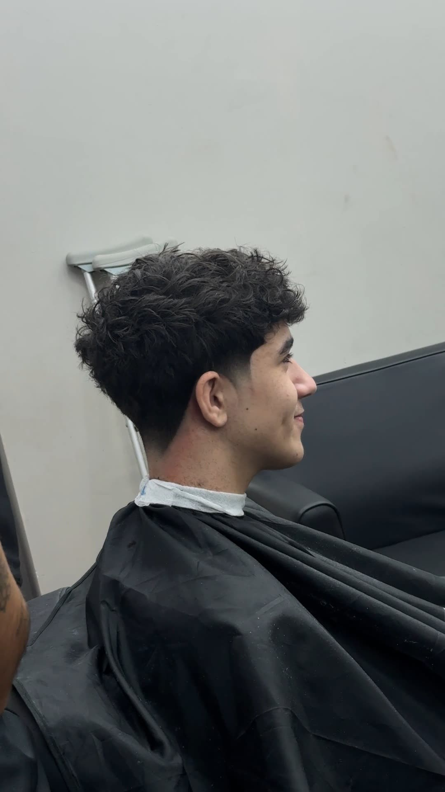
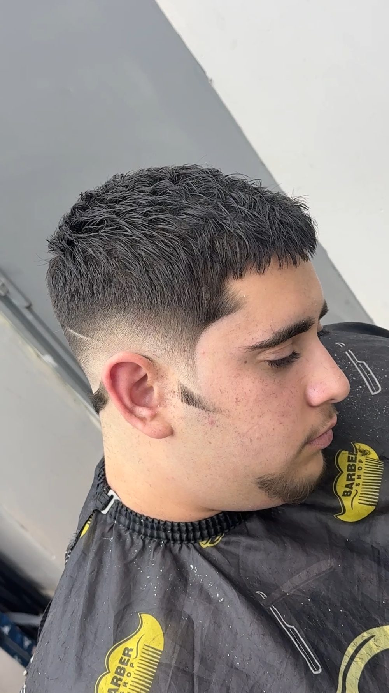
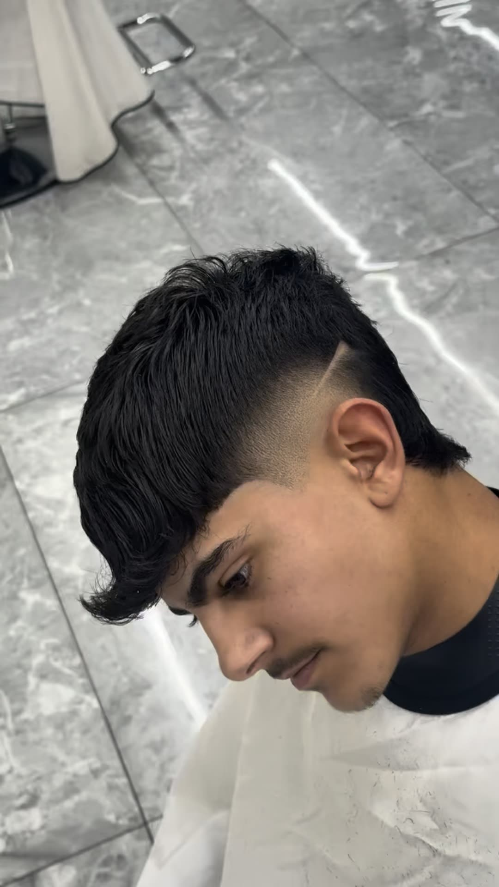
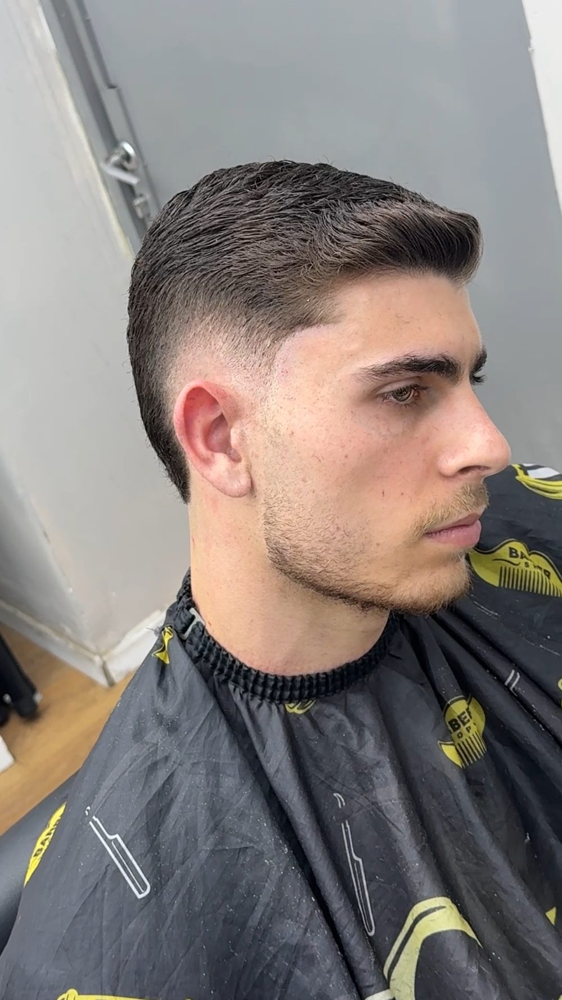
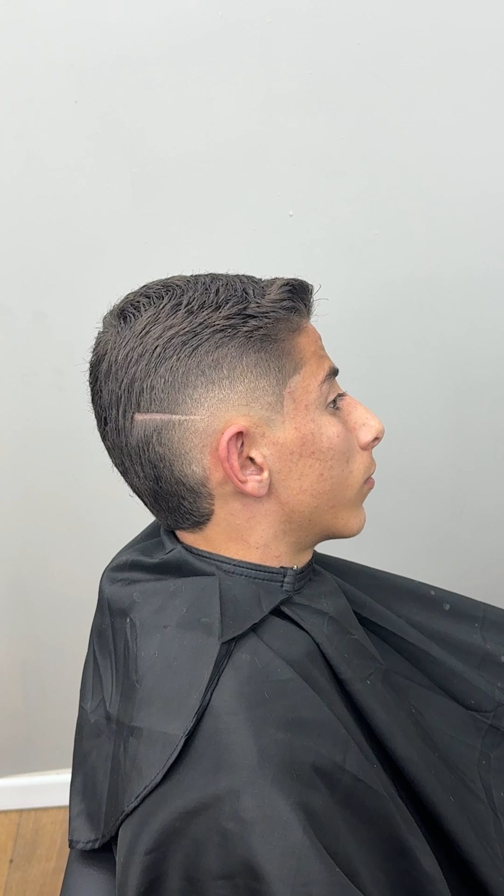
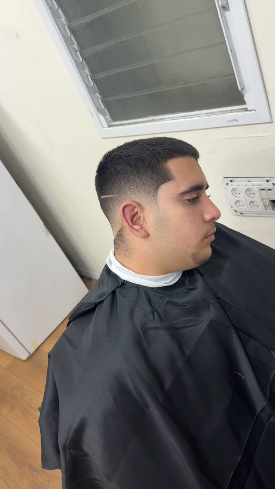
בכיתה
הדגמה, תרגול ותיקון בזמן אמת. ככה נראים השיעורים, הסדנאות וימי הסיום עם התעודות.

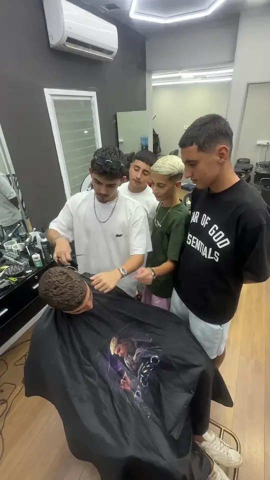
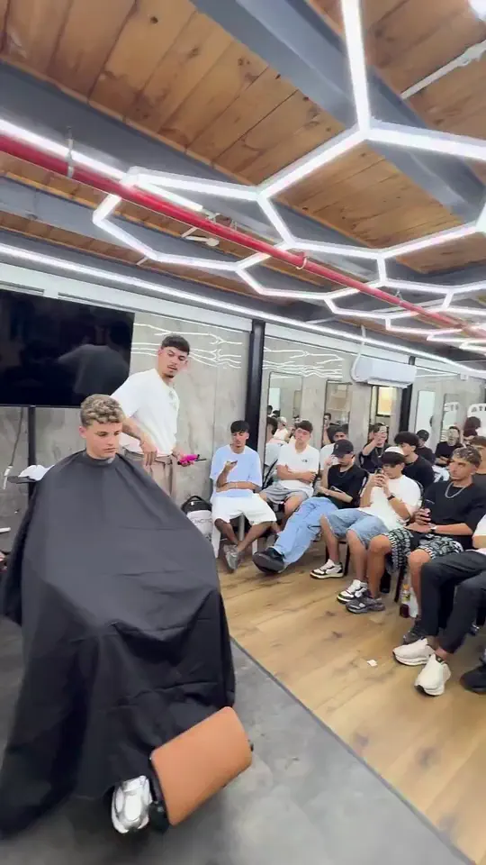
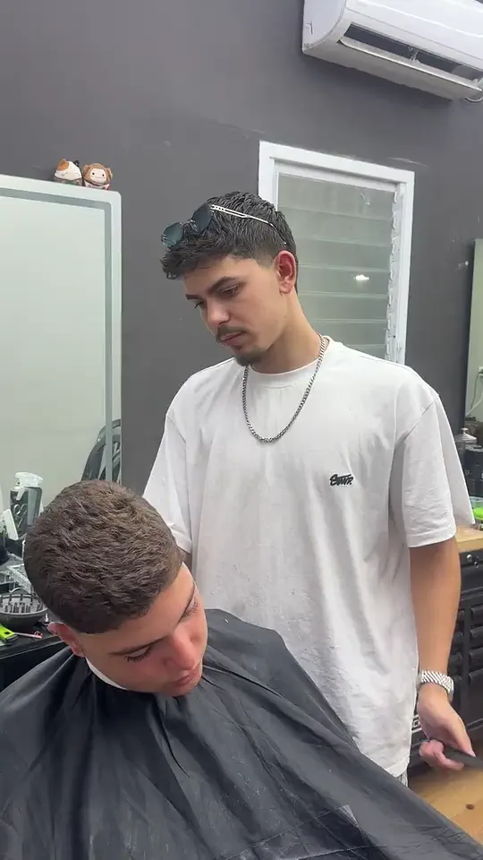
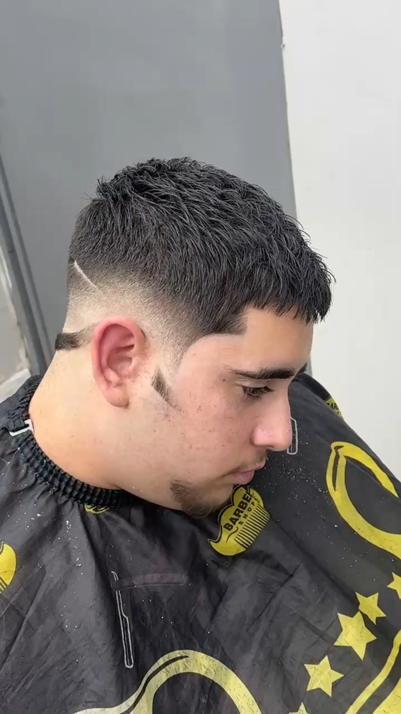
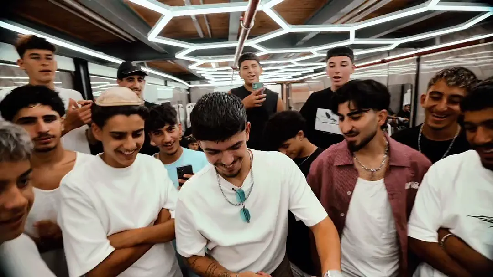
תלמידים מספרים
מה שתלמידים כתבו לי, מתוך הודעות אמיתיות, מילה במילה.
״השיטה הזאת הצילה אותי״
תלמיד השתלמות, על Spectrum
״גם הכל עם המספריים שלימדת בהשתלמות עזר לי בטירוף. לפני זה לא הבנתי מה אני עושה, ועכשיו אני מקצוען קצה״
תלמיד השתלמות
״פתאום אני מתחיל לקלוט דברים בבום שלפני לא קלטתי, וזה רק מיום אחד. מטורף אחי״
משתתף ביום השתלמות
״איך אני מחכה כבר ללמוד אותך עוד פעם. איך שיפרת אותי בהכל, אתה אפילו לא מבין״
תלמיד
״איזה כיף שאתה מעלה תוצאה שלי עם השיטה שלך. מתגאה להיות חלק מהאנשים שלמדו אותה״
תלמיד
״תודה רבה, הסרטונים שלך עוזרים לי מאוד״
מתוך הודעה באינסטגרם
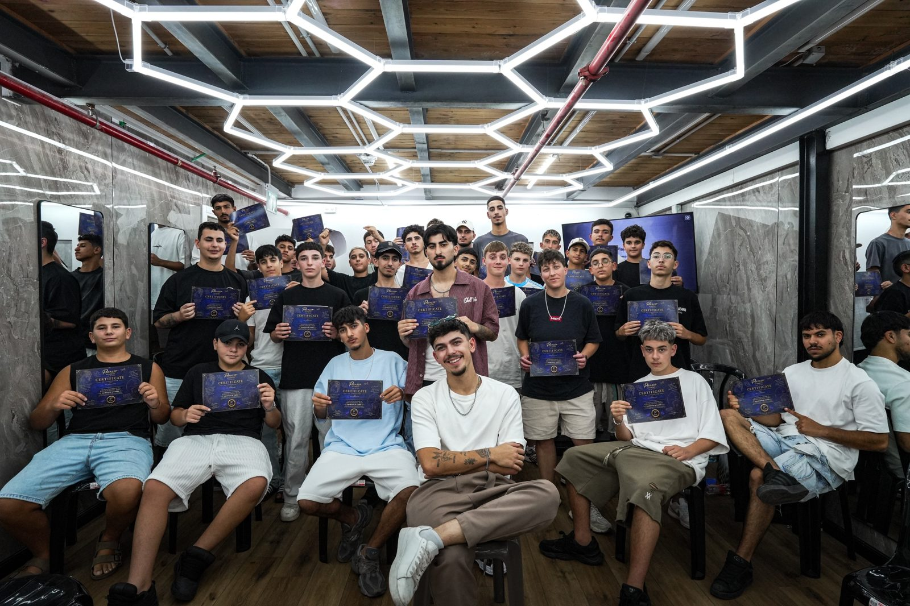
למה Picasso
כל החלטה נשענת על הלקוח, על השיער ועל מבנה הראש. לא על תספורת שראית ברשת.
שיטת פייד מקורית שבנויה על גוונים, ולא על מספרי מכונה.
לומדים גם תוכן, שיווק, מכירה וניהול, כדי שהכיסא שלך יתמלא.
אבחון אישי, פידבק בזמן אמת, ומקום לשאול ולתקן טעויות.
לפני שפונים
מסלולים
למי שמתחיל מאפס, או מספר כבר אבל עדיין מנחש.
לספרים עובדים שרוצים להפוך לסמכות בתחום.
למי שרוצה תוכנית שבנויה רק בשבילו.
יש מחזורי בוקר ומחזורי ערב. אפשר לשלם בעד 12 תשלומים.
שאלות
כן. מסלול Foundations בנוי בדיוק בשבילך, ומתחילים בו מההבנה עצמה, עוד לפני הטכניקה.
שיטת חשיבה. ב-Picasso Legacy אתה לומד לאבחן ולבנות כל תספורת מתוך עקרונות, בלי להסתמך על מספרי מסרק או על תספורות שראית ברשת.
Foundations בונה בסיס מאפס: אבחון, משקל, תנועה וצורה, ובסיס Spectrum. Picasso Legacy מיועד לספרים עובדים, ומשלב חיתוך מתקדם עם חשיבה עסקית. הליווי האישי נבנה סביבך, ומתחיל במפגש של אבחון ותוכנית אישית. בשיחת האפיון נגיד לך איזה מהם מתאים לך.
עד ארבעה, כדי שכל אחד יקבל תשומת לב אישית על הכיסא.
שיחה קצרה שבה מבינים איפה אתה עומד, מה אתה רוצה להשיג ואיזה מסלול מתאים לך. זו לא שיחת מכירה.
כן, עד 12 תשלומים.
יש מחזורי בוקר ומחזורי ערב, בקבוצות של עד 4 תלמידים. את המיקום, את תאריך המחזור הקרוב ואת המחיר של המסלול שמתאים לך תקבל בשיחת האפיון.
לא. השארת פרטים היא רק בקשה לשיחה. אתה מחליט אם להמשיך רק אחרי שהבנת מה מתאים לך.
שיחת אפיון
השאר פרטים ונחזור אליך לשיחה קצרה. בסוף השיחה תדע איזה מסלול מתאים לך, או שתדע שזה לא בשבילך כרגע. גם זו תשובה.
שם, טלפון ומסלול. פחות מדקה, ונחזור אליך לשיחת אפיון קצרה.
השאר פרטים לשיחת אפיון ↗הטופס נפתח בחלון חדש. השארת פרטים היא לא הרשמה ולא מחייבת אותך בכלום.
מעדיף לדבר ישר?
שלח הודעה בוואטסאפ ↗